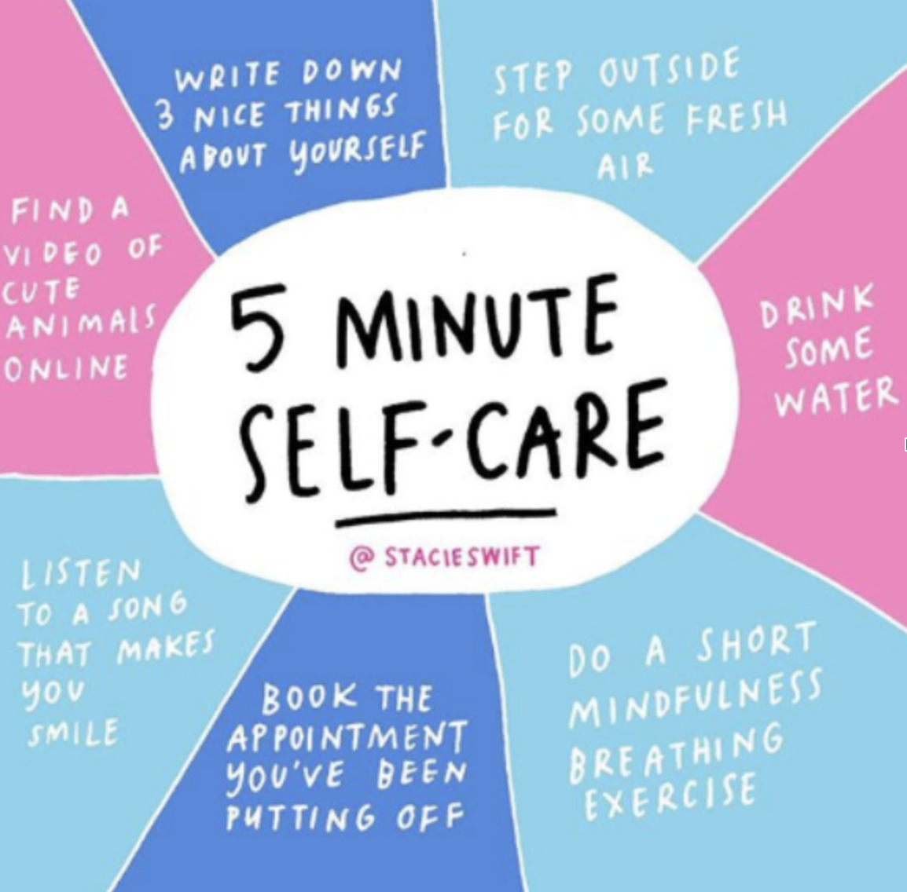
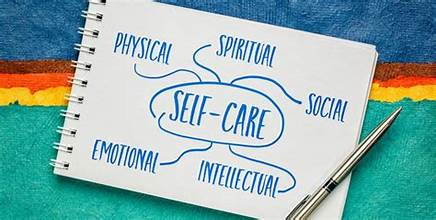

Practice Self-Care:
Practicing self-care is an essential and often overlooked aspect of maintaining overall well-being and a balanced, fulfilling life. It involves prioritizing one's physical, mental, and emotional health by regularly engaging in activities that promote relaxation, self-reflection, and stress reduction. In today's fast-paced world, with the constant demands of work, family, and social obligations, self-care is not a luxury but a necessity.

Self-care encompasses a wide range of activities, from physical exercises like yoga and meditation to taking time for hobbies, reading, or simply spending quiet moments in solitude. It means paying attention to your body's needs and listening to your emotions. Adequate sleep, proper nutrition, and regular exercise are foundational to self-care, as they provide the energy and resilience needed to handle life's challenges.

Mental and emotional self-care is equally vital. This includes practicing mindfulness, setting boundaries, and managing stress effectively. Seeking professional help or support when needed is also an important aspect of self-care, as it acknowledges the importance of addressing mental health issues without shame or stigma.
Incorporating self-care into your daily routine can lead to improved physical health, enhanced mental clarity, and greater emotional stability. It is a practice of self-compassion that not only benefits individuals personally but also positively impacts their relationships, work performance, and overall quality of life.

In conclusion, self-care is a commitment to taking the time to nourish your mind, body, and soul. It's a recognition that personal well-being is not an indulgence but a foundation upon which a more fulfilling and successful life is built. By making self-care a priority, individuals can better navigate life's challenges, reduce stress, and foster a stronger sense of self-worth and contentment.